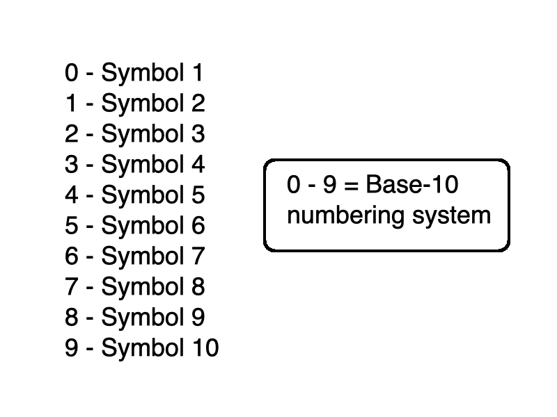
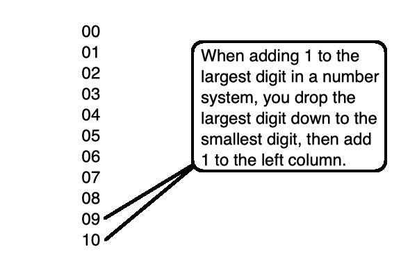
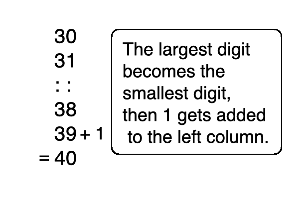

you smart good
Programming Concepts
Base-10 Numbering System
Before we dive deeper into Binary code and a Base-2 number system, let's use something a little more familiar.
The number system that you are (hopefully) familiar with is a Base-10 number system.
That is because the numbers range from 0 to 9, which includes 10 unique symbols.

So let's think about this for a minute . . .
If 9 is the largest symbol in Base-10, what happens when we need to add 1 to it?
Well, the 9 (largest symbol in Base-10) drops all the way back down to 0 (smallest symbol in Base-10), and then a 1 gets added to the next column.

You apply this same logic if you are adding 1 to any number ending with 9.
If you are adding 1 to 39, you drop the 9 back down to 0, then add 1 to the left column.
Remember this concept, as it is vital to understanding base-2!

Now let's take this one step further.
What if you add a 1 to a number where the last two digits are both 9?
It's the same process, with an extra step.
drop the right-most 9 to 0, and add 1 to the column to the left. Then drop that 9 down to 0, and add 1 to the column to the left yet again.